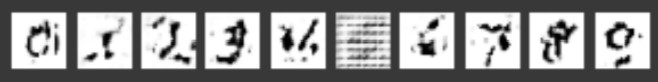

import tensorflow as tf import matplotlib.pyplot as plt import numpy as np from tensorflow.keras import layers from tensorflow.keras.utils import to_categorical
deftrain_step(images_one_batch,one_batch_labels): noise=tf.random.normal([images_one_batch.shape[0],noise_dim])#noise=seed with tf.GradientTape() as gen_tape,tf.GradientTape() as disc_tape: real_out,real_pred_labels=discriminator(images_one_batch,training=True)#真实图片送入判别器之后得到的预测真假标签，预测类别 #sampled_labels=np.random.randint(0,10,(images_one_batch.shape[0],1))#github上的纯keras用这个来表示"要生成的图片的标签信息",但我感觉还是用输入的真实图片的label比较贴合原文? gen_image=generator(noise,one_batch_labels,training=True) fake_out,fake_pred_labels=discriminator(gen_image,training=True)#生成的假图片送入判别器之后得到的预测真假标签，预测类别 #在ACGAN中，fake_pred_labels并没有用到（分类器只有10类，没有fake类别），写出来只是为了和SGAN的代码统一下 to_categorical_real_labels=to_categorical(one_batch_labels,num_classes=10) #ACGAN分类的类别只有10类（手写数字0-9），不包含fake类别，因此下面一行代码被注释掉了 #to_categorical_fake_labels=to_categorical(np.full((images_one_batch.shape[0],1),10),num_classes=10)#类别10代表假，真实样本的类别为0 #分别计算两者的损失 gen_loss=generator_loss(fake_out,fake_pred_labels,to_categorical_real_labels) disc_loss=discriminator_loss(real_out,fake_out,real_pred_labels,to_categorical_real_labels) #求可训练参数的梯度 gradient_gen=gen_tape.gradient(gen_loss,generator.trainable_variables) gradient_disc=disc_tape.gradient(disc_loss,discriminator.trainable_variables) #使用优化器更新可训练参数的权值 generator_opt.apply_gradients(zip(gradient_gen,generator.trainable_variables)) discriminator_opt.apply_gradients(zip(gradient_disc,discriminator.trainable_variables))
定义生成图片的展示函数
1 2 3 4 5 6 7 8 9 10
#将test_noise送入gen_model，以产生假图片 defgenerate_plot_image(gen_model,test_noise,test_label,epoch): pre_images=gen_model(test_noise,test_label,training=False)#此时无需训练生成器网络 fig=plt.figure(figsize=(5,18)) #pred = tf.squeeze(pred) for i inrange(10): plt.subplot(1,10, i + 1) plt.imshow(pre_images[i, :, :,0],cmap='Greys') plt.axis('off') plt.show()
定义训练函数
1 2 3 4 5 6 7 8 9 10
#noise_seed=tf.random.normal([num_example_to_generate,noise_dim]) noise_seed=tf.random.normal([10,noise_dim]) #print(noise_seed) label_seed=np.array([i for i inrange(10)])
deftrain(dataset,epochs): for epoch inrange(epochs): for image_batch,label in dataset: train_step(image_batch,label) generate_plot_image(generator,noise_seed,label_seed,epoch)
1
#generator(noise_seed,label_seed,training=False)
开始训练
1
train(datasets,EPOCHS)
本模型最终的结果如下

训练过程中报warning：
1
WARNING:tensorflow:Gradients do not exist for variables ['discriminator_model/conv2d/kernel:0', 'discriminator_model/conv2d/bias:0'] when minimizing the loss.